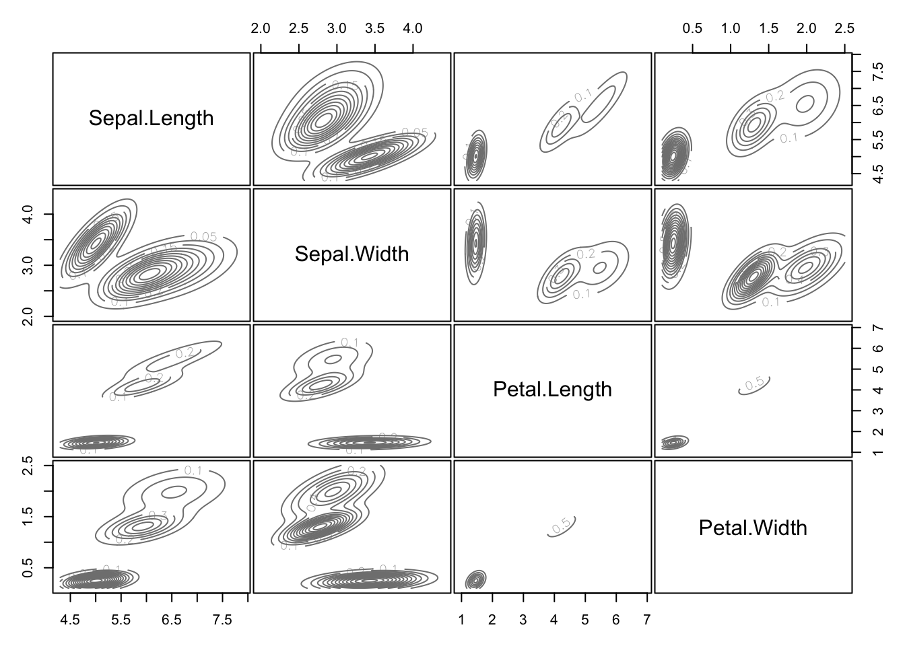
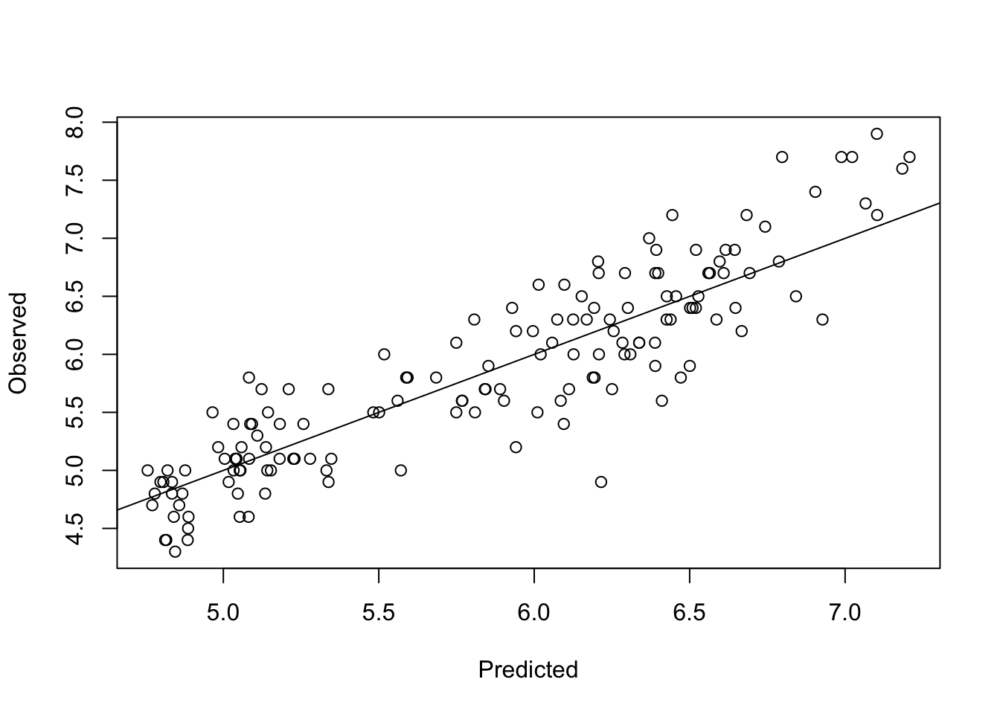
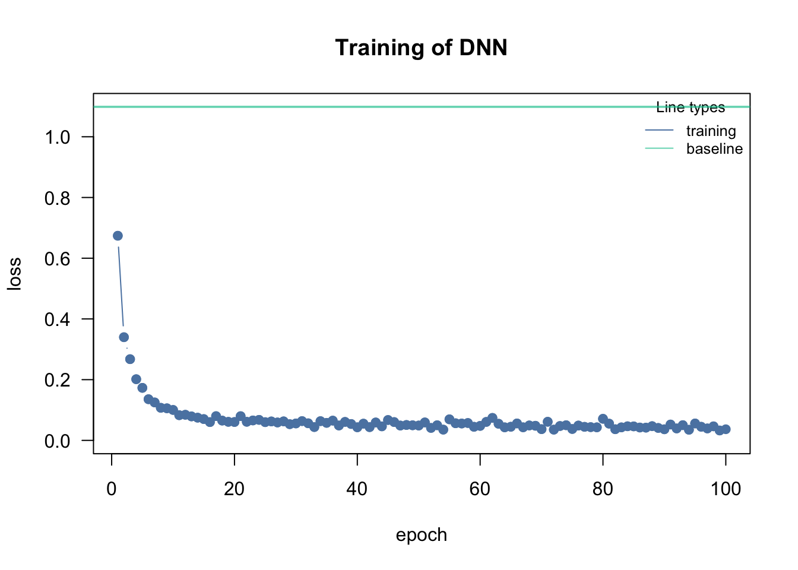
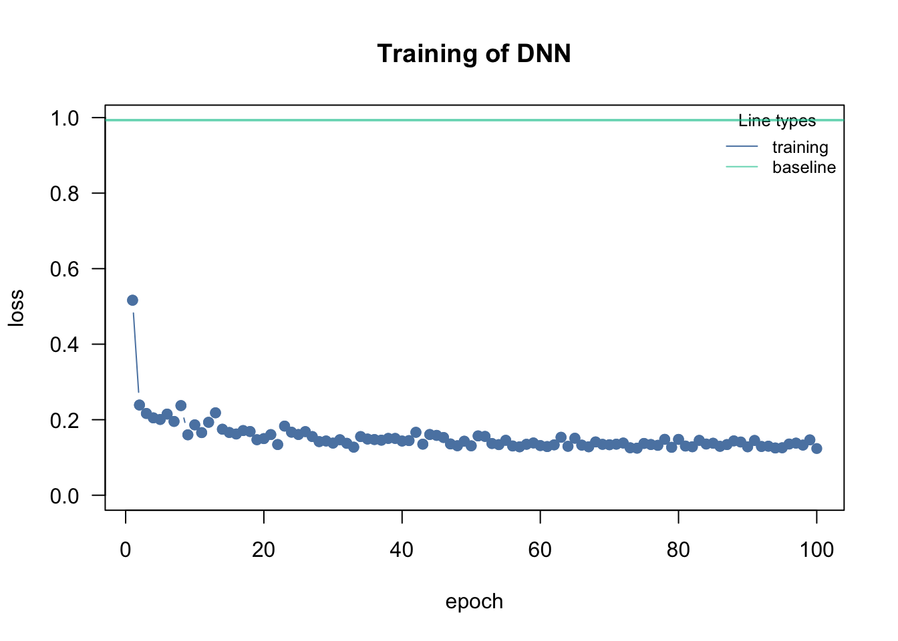

iris = datasets::iris
colors = hcl.colors(3)
traits = as.matrix(iris[,1:4])
species = iris$Species
image(y = 1:4, x = 1:length(species) , z = traits,
ylab = "Floral trait", xlab = "Individual")
segments(50.5, 0, 50.5, 5, col = "black", lwd = 2)
segments(100.5, 0, 100.5, 5, col = "black", lwd = 2)2 Typical Machine Learning Tasks
2.1 Overview
There are three types of machine learning tasks:
- Supervised learning
- Unsupervised learning
- Reinforcement learning
In supervised learning, you train algorithms using labeled data, what means that you already know the correct answer for a part of the data (the so called training data).
Unsupervised learning in contrast is a technique, where one does not need to monitor the model or apply labels. Instead, you allow the model to work on its own to discover information.
Reinforcement learning is a technique that emulates a game-like situation. The algorithm finds a solution by trial and error and gets either rewards or penalties for every action. As in games, the goal is to maximize the rewards. We will talk more about this technique on the last day of the course.
For the moment, we will focus on the first two tasks, supervised and unsupervised learning. To do so, we will begin with a small example. But before you start with the code, here is a video to prepare you for what we will do in the class:
2.1.1 Questions
In ML, predictors (or the explaining variables) are often called features:
In supervised learning the response (y) and the predictors (x) are known:
In unsupervised learning, only the predictors are known:
In reinforcement learning an agent (ML model) is trained by interacting with an environment:
Have a look at the two textbooks on ML (Elements of statistical learning and introduction to statistical learning) in our further readings at the end of the GRIPS course - which of the following statements is true?2.2 Unsupervised Learning
In unsupervised learning, we want to identify patterns in data without having any examples (supervision) about what the correct patterns / classes are. As an example, consider the iris data set. Here, we have 150 observations of 4 floral traits:
The observations are from 3 species and indeed those species tend to have different traits, meaning that the observations form 3 clusters.
pairs(traits, pch = as.integer(species), col = colors[as.integer(species)])However, imagine we don’t know what species are, what is basically the situation in which people in the antique have been. The people just noted that some plants have different flowers than others, and decided to give them different names. This kind of process is what unsupervised learning does.
2.2.1 Hierarchical Clustering
A cluster refers to a collection of data points aggregated together because of certain similarities.
In hierarchical clustering, a hierarchy (tree) between data points is built.
- Agglomerative: Start with each data point in their own cluster, merge them up hierarchically.
- Divisive: Start with all data points in one cluster, and split hierarchically.
Merges / splits are done according to linkage criterion, which measures distance between (potential) clusters. Cut the tree at a certain height to get clusters.
Here an example
set.seed(123)
#Reminder: traits = as.matrix(iris[,1:4]).
d = dist(traits)
hc = hclust(d, method = "complete")
plot(hc, main="")
rect.hclust(hc, k = 3) # Draw rectangles around the branches.
Same plot, but with colors for true species identity
library(ape)
plot(as.phylo(hc),
tip.color = colors[as.integer(species)],
direction = "downwards")
hcRes3 = cutree(hc, k = 3) #Cut a dendrogram tree into groups.Calculate confusion matrix. Note we are switching labels here so that it fits to the species.
tmp = hcRes3
tmp[hcRes3 == 2] = 3
tmp[hcRes3 == 3] = 2
hcRes3 = tmp
table(hcRes3, species)| setosa | versicolor | virginica |
|---|---|---|
| 50 | 0 | 0 |
| 0 | 27 | 1 |
| 0 | 23 | 49 |
Note that results might change if you choose a different agglomeration method, distance metric or scale of your variables. Compare, e.g. to this example:
hc = hclust(d, method = "ward.D2")
plot(as.phylo(hc),
tip.color = colors[as.integer(species)],
direction = "downwards")hcRes3 = cutree(hc, k = 3) #Cut a dendrogram tree into groups.
table(hcRes3, species)| setosa | versicolor | virginica |
|---|---|---|
| 50 | 0 | 0 |
| 0 | 49 | 15 |
| 0 | 1 | 35 |
Which method is best?
library(dendextend)set.seed(123)
methods = c("ward.D", "single", "complete", "average",
"mcquitty", "median", "centroid", "ward.D2")
out = dendlist() # Create a dendlist object from several dendrograms.
for(method in methods){
res = hclust(d, method = method)
out = dendlist(out, as.dendrogram(res))
}
names(out) = methods
print(out)$ward.D
'dendrogram' with 2 branches and 150 members total, at height 199.6205
$single
'dendrogram' with 2 branches and 150 members total, at height 1.640122
$complete
'dendrogram' with 2 branches and 150 members total, at height 7.085196
$average
'dendrogram' with 2 branches and 150 members total, at height 4.062683
$mcquitty
'dendrogram' with 2 branches and 150 members total, at height 4.497283
$median
'dendrogram' with 2 branches and 150 members total, at height 2.82744
$centroid
'dendrogram' with 2 branches and 150 members total, at height 2.994307
$ward.D2
'dendrogram' with 2 branches and 150 members total, at height 32.44761
attr(,"class")
[1] "dendlist"get_ordered_3_clusters = function(dend){
# order.dendrogram function returns the order (index)
# or the "label" attribute for the leaves.
# cutree: Cut the tree (dendrogram) into groups of data.
cutree(dend, k = 3)[order.dendrogram(dend)]
}
dend_3_clusters = lapply(out, get_ordered_3_clusters)
# Calculate Fowlkes-Mallows Index (determine the similarity between clusterings)
compare_clusters_to_iris = function(clus){
FM_index(clus, rep(1:3, each = 50), assume_sorted_vectors = TRUE)
}
clusters_performance = sapply(dend_3_clusters, compare_clusters_to_iris)
dotchart(sort(clusters_performance), xlim = c(0.3, 1),
xlab = "Fowlkes-Mallows index",
main = "Performance of linkage methods
in detecting the 3 species \n in our example",
pch = 19)
We might conclude that ward.D2 works best here. However, as we will learn later, optimizing the method without a hold-out for testing implies that our model may be overfitting. We should check this using cross-validation.
2.2.2 K-means Clustering
Another example for an unsupervised learning algorithm is k-means clustering, one of the simplest and most popular unsupervised machine learning algorithms.
To start with the algorithm, you first have to specify the number of clusters (for our example the number of species). Each cluster has a centroid, which is the assumed or real location representing the center of the cluster (for our example this would be how an average plant of a specific species would look like). The algorithm starts by randomly putting centroids somewhere. Afterwards each data point is assigned to the respective cluster that raises the overall in-cluster sum of squares (variance) related to the distance to the centroid least of all. After the algorithm has placed all data points into a cluster the centroids get updated. By iterating this procedure until the assignment doesn’t change any longer, the algorithm can find the (locally) optimal centroids and the data points belonging to this cluster. Note that results might differ according to the initial positions of the centroids. Thus several (locally) optimal solutions might be found.
The “k” in K-means refers to the number of clusters and the ‘means’ refers to averaging the data-points to find the centroids.
A typical pipeline for using k-means clustering looks the same as for other algorithms. After having visualized the data, we fit a model, visualize the results and have a look at the performance by use of the confusion matrix. By setting a fixed seed, we can ensure that results are reproducible.
set.seed(123)
#Reminder: traits = as.matrix(iris[,1:4]).
kc = kmeans(traits, 3)
print(kc)K-means clustering with 3 clusters of sizes 50, 62, 38
Cluster means:
Sepal.Length Sepal.Width Petal.Length Petal.Width
1 5.006000 3.428000 1.462000 0.246000
2 5.901613 2.748387 4.393548 1.433871
3 6.850000 3.073684 5.742105 2.071053
Clustering vector:
[1] 1 1 1 1 1 1 1 1 1 1 1 1 1 1 1 1 1 1 1 1 1 1 1 1 1 1 1 1 1 1 1 1 1 1 1 1 1
[38] 1 1 1 1 1 1 1 1 1 1 1 1 1 2 2 3 2 2 2 2 2 2 2 2 2 2 2 2 2 2 2 2 2 2 2 2 2
[75] 2 2 2 3 2 2 2 2 2 2 2 2 2 2 2 2 2 2 2 2 2 2 2 2 2 2 3 2 3 3 3 3 2 3 3 3 3
[112] 3 3 2 2 3 3 3 3 2 3 2 3 2 3 3 2 2 3 3 3 3 3 2 3 3 3 3 2 3 3 3 2 3 3 3 2 3
[149] 3 2
Within cluster sum of squares by cluster:
[1] 15.15100 39.82097 23.87947
(between_SS / total_SS = 88.4 %)
Available components:
[1] "cluster" "centers" "totss" "withinss" "tot.withinss"
[6] "betweenss" "size" "iter" "ifault" Visualizing the results. Color codes true species identity, symbol shows cluster result.
plot(iris[c("Sepal.Length", "Sepal.Width")],
col = colors[as.integer(species)], pch = kc$cluster)
points(kc$centers[, c("Sepal.Length", "Sepal.Width")],
col = colors, pch = 1:3, cex = 3)
We see that there are are some discrepancies. Confusion matrix:
table(iris$Species, kc$cluster)
1 2 3
setosa 50 0 0
versicolor 0 48 2
virginica 0 14 36If you want to animate the clustering process, you could run
library(animation)
saveGIF(kmeans.ani(x = traits[,1:2], col = colors),
interval = 1, ani.width = 800, ani.height = 800)Elbow technique to determine the probably best suited number of clusters:
set.seed(123)
getSumSq = function(k){ kmeans(traits, k, nstart = 25)$tot.withinss }
#Perform algorithm for different cluster sizes and retrieve variance.
iris.kmeans1to10 = sapply(1:10, getSumSq)
plot(1:10, iris.kmeans1to10, type = "b", pch = 19, frame = FALSE,
xlab = "Number of clusters K",
ylab = "Total within-clusters sum of squares",
col = c("black", "red", rep("black", 8)))Often, one is interested in sparse models. Furthermore, higher k than necessary tends to overfitting. At the kink in the picture, the sum of squares dropped enough and k is still low enough. But keep in mind, this is only a rule of thumb and might be wrong in some special cases.
2.2.3 Density-based Clustering
Determine the affinity of a data point according to the affinity of its k nearest neighbors. This is a very general description as there are many ways to do so.
#Reminder: traits = as.matrix(iris[,1:4]).
library(dbscan)
Attaching package: 'dbscan'The following object is masked from 'package:stats':
as.dendrogramset.seed(123)
kNNdistplot(traits, k = 4) # Calculate and plot k-nearest-neighbor distances.
abline(h = 0.4, lty = 2)dc = dbscan(traits, eps = 0.4, minPts = 6)
print(dc)DBSCAN clustering for 150 objects.
Parameters: eps = 0.4, minPts = 6
Using euclidean distances and borderpoints = TRUE
The clustering contains 4 cluster(s) and 32 noise points.
0 1 2 3 4
32 46 36 14 22
Available fields: cluster, eps, minPts, dist, borderPointslibrary(factoextra)fviz_cluster(dc, traits, geom = "point", ggtheme = theme_light())
2.2.4 Model-based Clustering
The last class of methods for unsupervised clustering are so-called model-based clustering methods.
library(mclust)Package 'mclust' version 6.0.0
Type 'citation("mclust")' for citing this R package in publications.mb = Mclust(traits)Mclust automatically compares a number of candidate models (clusters, shape) according to BIC (The BIC is a criterion for classifying algorithms depending their prediction quality and their usage of parameters). We can look at the selected model via:
mb$G # Two clusters.[1] 2mb$modelName # > Ellipsoidal, equal shape.[1] "VEV"We see that the algorithm prefers having 2 clusters. For better comparability to the other 2 methods, we will override this by setting:
mb3 = Mclust(traits, 3)Result in terms of the predicted densities for 3 clusters
plot(mb3, "density")
Predicted clusters:
plot(mb3, what=c("classification"), add = T)
Confusion matrix:
table(iris$Species, mb3$classification)| setosa | versicolor | virginica |
|---|---|---|
| 50 | 0 | 0 |
| 0 | 49 | 15 |
| 0 | 1 | 35 |
2.2.5 Ordination
Ordination is used in explorative analysis and compared to clustering, similar objects are ordered together. So there is a relationship between clustering and ordination. Here a PCA ordination on on the iris data set.
pcTraits = prcomp(traits, center = TRUE, scale. = TRUE)
biplot(pcTraits, xlim = c(-0.25, 0.25), ylim = c(-0.25, 0.25))
You can cluster the results of this ordination, ordinate before clustering, or superimpose one on the other.
2.2.6 Exercise
Task
Go through the 4(5) algorithms above, and check if they are sensitive (i.e. if results change) if you scale the input features (= predictors), instead of using the raw data. Discuss in your group: Which is more appropriate for this analysis and/or in general: Scaling or not scaling?
library(dendextend)
methods = c("ward.D", "single", "complete", "average",
"mcquitty", "median", "centroid", "ward.D2")
cluster_all_methods = function(distances){
out = dendlist()
for(method in methods){
res = hclust(distances, method = method)
out = dendlist(out, as.dendrogram(res))
}
names(out) = methods
return(out)
}
get_ordered_3_clusters = function(dend){
return(cutree(dend, k = 3)[order.dendrogram(dend)])
}
compare_clusters_to_iris = function(clus){
return(FM_index(clus, rep(1:3, each = 50), assume_sorted_vectors = TRUE))
}
do_clustering = function(traits, scale = FALSE){
set.seed(123)
headline = "Performance of linkage methods\nin detecting the 3 species\n"
if(scale){
traits = scale(traits) # Do scaling on copy of traits.
headline = paste0(headline, "Scaled")
}else{ headline = paste0(headline, "Not scaled") }
distances = dist(traits)
out = cluster_all_methods(distances)
dend_3_clusters = lapply(out, get_ordered_3_clusters)
clusters_performance = sapply(dend_3_clusters, compare_clusters_to_iris)
dotchart(sort(clusters_performance), xlim = c(0.3,1),
xlab = "Fowlkes-Mallows index",
main = headline,
pch = 19)
}
traits = as.matrix(iris[,1:4])
# Do clustering on unscaled data.
do_clustering(traits, FALSE)
# Do clustering on scaled data.
do_clustering(traits, TRUE)
It seems that scaling is harmful for hierarchical clustering. But this might be a deception. Be careful: If you have data on different units or magnitudes, scaling is definitely useful! Otherwise variables with higher values get higher influence.
do_clustering = function(traits, scale = FALSE){
set.seed(123)
if(scale){
traits = scale(traits) # Do scaling on copy of traits.
headline = "K-means Clustering\nScaled\nSum of all tries: "
}else{ headline = "K-means Clustering\nNot scaled\nSum of all tries: " }
getSumSq = function(k){ kmeans(traits, k, nstart = 25)$tot.withinss }
iris.kmeans1to10 = sapply(1:10, getSumSq)
headline = paste0(headline, round(sum(iris.kmeans1to10), 2))
plot(1:10, iris.kmeans1to10, type = "b", pch = 19, frame = FALSE,
main = headline,
xlab = "Number of clusters K",
ylab = "Total within-clusters sum of squares",
col = c("black", "red", rep("black", 8)) )
}
traits = as.matrix(iris[,1:4])
# Do clustering on unscaled data.
do_clustering(traits, FALSE)# Do clustering on scaled data.
do_clustering(traits, TRUE)
It seems that scaling is harmful for K-means clustering. But this might be a deception. Be careful: If you have data on different units or magnitudes, scaling is definitely useful! Otherwise variables with higher values get higher influence.
library(dbscan)
correct = as.factor(iris[,5])
# Start at 1. Noise points will get 0 later.
levels(correct) = 1:length(levels(correct))
correct [1] 1 1 1 1 1 1 1 1 1 1 1 1 1 1 1 1 1 1 1 1 1 1 1 1 1 1 1 1 1 1 1 1 1 1 1 1 1
[38] 1 1 1 1 1 1 1 1 1 1 1 1 1 2 2 2 2 2 2 2 2 2 2 2 2 2 2 2 2 2 2 2 2 2 2 2 2
[75] 2 2 2 2 2 2 2 2 2 2 2 2 2 2 2 2 2 2 2 2 2 2 2 2 2 2 3 3 3 3 3 3 3 3 3 3 3
[112] 3 3 3 3 3 3 3 3 3 3 3 3 3 3 3 3 3 3 3 3 3 3 3 3 3 3 3 3 3 3 3 3 3 3 3 3 3
[149] 3 3
Levels: 1 2 3do_clustering = function(traits, scale = FALSE){
set.seed(123)
if(scale){ traits = scale(traits) } # Do scaling on copy of traits.
#####
# Play around with the parameters "eps" and "minPts" on your own!
#####
dc = dbscan(traits, eps = 0.41, minPts = 4)
labels = as.factor(dc$cluster)
noise = sum(dc$cluster == 0)
levels(labels) = c("noise", 1:( length(levels(labels)) - 1))
tbl = table(correct, labels)
correct_classified = 0
for(i in 1:length(levels(correct))){
correct_classified = correct_classified + tbl[i, i + 1]
}
cat( if(scale){ "Scaled" }else{ "Not scaled" }, "\n\n" )
cat("Confusion matrix:\n")
print(tbl)
cat("\nCorrect classified points: ", correct_classified, " / ", length(iris[,5]))
cat("\nSum of noise points: ", noise, "\n")
}
traits = as.matrix(iris[,1:4])
# Do clustering on unscaled data.
do_clustering(traits, FALSE)Not scaled
Confusion matrix:
labels
correct noise 1 2 3 4
1 3 47 0 0 0
2 5 0 38 3 4
3 17 0 0 33 0
Correct classified points: 118 / 150
Sum of noise points: 25 # Do clustering on scaled data.
do_clustering(traits, TRUE)Scaled
Confusion matrix:
labels
correct noise 1 2 3 4
1 9 41 0 0 0
2 14 0 36 0 0
3 36 0 1 4 9
Correct classified points: 81 / 150
Sum of noise points: 59 It seems that scaling is harmful for density based clustering. But this might be a deception. Be careful: If you have data on different units or magnitudes, scaling is definitely useful! Otherwise variables with higher values get higher influence.
library(mclust)
do_clustering = function(traits, scale = FALSE){
set.seed(123)
if(scale){ traits = scale(traits) } # Do scaling on copy of traits.
mb3 = Mclust(traits, 3)
tbl = table(iris$Species, mb3$classification)
cat( if(scale){ "Scaled" }else{ "Not scaled" }, "\n\n" )
cat("Confusion matrix:\n")
print(tbl)
cat("\nCorrect classified points: ", sum(diag(tbl)), " / ", length(iris[,5]))
}
traits = as.matrix(iris[,1:4])
# Do clustering on unscaled data.
do_clustering(traits, FALSE)Not scaled
Confusion matrix:
1 2 3
setosa 50 0 0
versicolor 0 45 5
virginica 0 0 50
Correct classified points: 145 / 150# Do clustering on scaled data.
do_clustering(traits, TRUE)Scaled
Confusion matrix:
1 2 3
setosa 50 0 0
versicolor 0 45 5
virginica 0 0 50
Correct classified points: 145 / 150For model based clustering, scaling does not matter.
traits = as.matrix(iris[,1:4])
biplot(prcomp(traits, center = TRUE, scale. = TRUE),
main = "Use integrated scaling")
biplot(prcomp(scale(traits), center = FALSE, scale. = FALSE),
main = "Scale explicitly")
biplot(prcomp(traits, center = FALSE, scale. = FALSE),
main = "No scaling at all")
For PCA ordination, scaling matters. Because we are interested in directions of maximal variance, all parameters should be scaled, or the one with the highest values might dominate all others.
2.3 Supervised Learning
The two most prominent branches of supervised learning are regression and classification. Fundamentally, classification is about predicting a label and regression is about predicting a continuous variable. The following video explains that in more depth:
2.3.1 Regression
The random forest (RF) algorithm is possibly the most widely used machine learning algorithm and can be used for regression and classification. We will talk more about the algorithm later.
For the moment, we want to go through a typical workflow for a supervised regression: First, we visualize the data. Next, we fit the model and lastly we visualize the results. We will again use the iris data set that we used before. The goal is now to predict Sepal.Length based on the information about the other variables (including species).
Fitting the model:
library(randomForest)
set.seed(123)Sepal.Length is a numerical variable:
str(iris)'data.frame': 150 obs. of 5 variables:
$ Sepal.Length: num 5.1 4.9 4.7 4.6 5 5.4 4.6 5 4.4 4.9 ...
$ Sepal.Width : num 3.5 3 3.2 3.1 3.6 3.9 3.4 3.4 2.9 3.1 ...
$ Petal.Length: num 1.4 1.4 1.3 1.5 1.4 1.7 1.4 1.5 1.4 1.5 ...
$ Petal.Width : num 0.2 0.2 0.2 0.2 0.2 0.4 0.3 0.2 0.2 0.1 ...
$ Species : Factor w/ 3 levels "setosa","versicolor",..: 1 1 1 1 1 1 1 1 1 1 ...hist(iris$Sepal.Length)
The randomForest can be used similar to a linear regression model, we can specify the features using the formula syntax (~. means that all other variables should be used as features):
m1 = randomForest(Sepal.Length ~ ., data = iris) # ~.: Against all others.
print(m1)
Call:
randomForest(formula = Sepal.Length ~ ., data = iris)
Type of random forest: regression
Number of trees: 500
No. of variables tried at each split: 1
Mean of squared residuals: 0.1364625
% Var explained: 79.97As many other ML algorithms, the RF is not interpretable, so we don’t get coefficients that connect the variables to the response. But, at least we get the variable importance which is similar to an anova, telling us which variables were the most important ones:
varImpPlot(m1)
And the finally, we can use the model to make predictions using the predict method:
oldpar = par(mfrow = c(1, 2))
plot(predict(m1), iris$Sepal.Length, xlab = "Predicted", ylab = "Observed")
abline(0, 1)
par(oldpar)
To understand the structure of a random forest in more detail, we can use a package from GitHub.
reprtree:::plot.getTree(m1, iris)
Here, one of the regression trees is shown.
2.3.2 Classification
With the random forest, we can also do classification. The steps are the same as for regression tasks, but we can additionally see how well it performed by looking at the confusion matrix. Each row of this matrix contains the instances in a predicted class and each column represents the instances in the actual class. Thus the diagonals are the correctly predicted classes and the off-diagonal elements are the falsely classified elements.
Species is a factor with three levels:
str(iris)'data.frame': 150 obs. of 5 variables:
$ Sepal.Length: num 5.1 4.9 4.7 4.6 5 5.4 4.6 5 4.4 4.9 ...
$ Sepal.Width : num 3.5 3 3.2 3.1 3.6 3.9 3.4 3.4 2.9 3.1 ...
$ Petal.Length: num 1.4 1.4 1.3 1.5 1.4 1.7 1.4 1.5 1.4 1.5 ...
$ Petal.Width : num 0.2 0.2 0.2 0.2 0.2 0.4 0.3 0.2 0.2 0.1 ...
$ Species : Factor w/ 3 levels "setosa","versicolor",..: 1 1 1 1 1 1 1 1 1 1 ...Fitting the model (syntax is the same as for the regression task):
set.seed(123)
library(randomForest)
m1 = randomForest(Species ~ ., data = iris)
print(m1)
Call:
randomForest(formula = Species ~ ., data = iris)
Type of random forest: classification
Number of trees: 500
No. of variables tried at each split: 2
OOB estimate of error rate: 4.67%
Confusion matrix:
setosa versicolor virginica class.error
setosa 50 0 0 0.00
versicolor 0 47 3 0.06
virginica 0 4 46 0.08varImpPlot(m1)Predictions:
head(predict(m1)) 1 2 3 4 5 6
setosa setosa setosa setosa setosa setosa
Levels: setosa versicolor virginicaConfusion matrix:
table(predict(m1), as.integer(iris$Species))
1 2 3
setosa 50 0 0
versicolor 0 47 4
virginica 0 3 46Our model made a few errors.
Visualizing results ecologically:
par(mfrow = c(1, 2))
plot(iris$Petal.Width, iris$Petal.Length, col = iris$Species, main = "Observed")
plot(iris$Petal.Width, iris$Petal.Length, col = predict(m1), main = "Predicted")Visualizing one of the fitted models:
oldpar = par(mfrow = c(1, 2))
reprtree:::plot.getTree(m1, iris)
par(oldpar) Confusion matrix:
knitr::kable(table(predict(m1), iris$Species))2.3.3 Exercise
Using a random forest on the iris dataset, which parameter would be more important (remember there is a function to check this) to predict Petal.Width?
Task: First deep neural network
Deep neural networks are currently the state of the art in unsupervised learning. Their ability to model different types of data (e.g. graphs, images) is one of the reasons for their rise in recent years. However, their use beyond tabular data (tabular data == features have specific meanings) requires extensive (programming) knowledge of the underlying deep learning frameworks (e.g. TensorFlow or PyTorch), which we will teach you in two days. For tabular data, we can use packages like cito, which work similarly to regression functions like lm and allow us to train deep neural networks in one line of code.
A demonstration with the iris dataset:
library(cito)
# always scale your features when using DNNs
iris_scaled = iris
iris_scaled[,1:4] = scale(iris_scaled[,1:4])
# the default architecture is 3 hidden layers, each with 10 hidden nodes (we will talk on Wednesday more about the architecture)
# Similar to a lm/glm we have to specify the response/loss family, for multi-target (3 species) we use the softmax loss function
model = dnn(Species~., lr = 0.1,data = iris_scaled, loss = "softmax")
DNNs are not interpretable, i.e. no coefficients (slopes) that tell us how the features affect the response, however, similar to the RF, we can calculate a ‘variable importance’ which is similar to an anova:
summary(model)Deep Neural Network Model summary
Model generated on basis of:
Feature Importance:
variable importance
1 Sepal.Length 1.023813
2 Sepal.Width 1.067765
3 Petal.Length 1.516016
4 Petal.Width 1.488091Predictions
head(predict(model)) setosa versicolor virginica
[1,] 0.9997392 0.0002607228 8.413646e-22
[2,] 0.9981414 0.0018585834 1.734785e-19
[3,] 0.9996216 0.0003783244 4.293342e-21
[4,] 0.9992385 0.0007615204 5.022579e-20
[5,] 0.9998106 0.0001894266 2.613742e-22
[6,] 0.9995670 0.0004330313 6.063035e-21We get three columns, one for each species, and they are probabilities.
plot(iris$Sepal.Length, iris$Sepal.Width, col = apply(predict(model), 1, which.max))
Performance:
table(apply(predict(model), 1, which.max), as.integer(iris$Species))
1 2 3
1 50 0 0
2 0 47 1
3 0 3 49Task:
- predict Sepal.Length instead of Species (classification -> regression)
- Use the ‘mse’ loss function
- Plot predicted vs observed
Regression:
losses such as “mse” (mean squared error) or the “msa” (mean absolute error) are used for regression tasks
model = dnn(Sepal.Length~., lr = 0.1,data = iris_scaled, loss = "mse")summary(model)Deep Neural Network Model summary
Model generated on basis of:
Feature Importance:
variable importance
1 Sepal.Width 1.852628
2 Petal.Length 17.621947
3 Petal.Width 1.867329
4 Species 1.392562plot(iris_scaled$Sepal.Length, predict(model))
Calculate \(R^2\):
cor(iris_scaled$Sepal.Length, predict(model))**2 [,1]
[1,] 0.881118